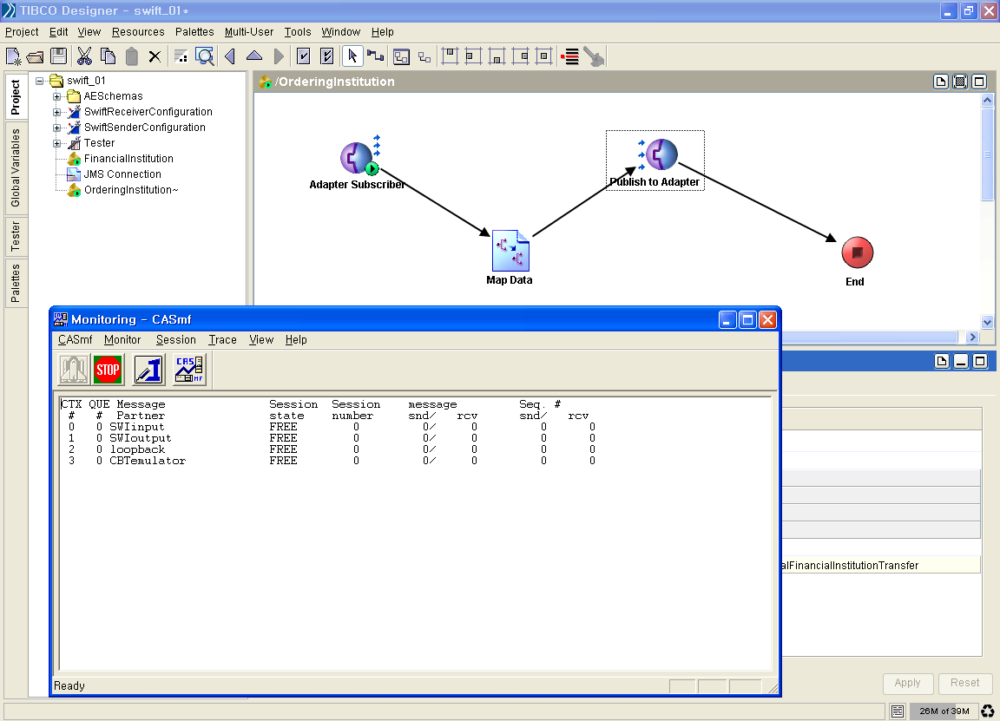
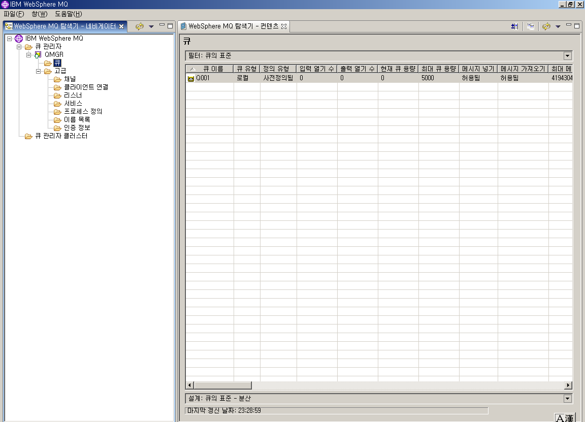

1. Why Legacy Is So Hard to Replace
Legacy systems are critical assets that have carried the core operations of enterprises for decades. A bank's account system, a telecom carrier's billing, a manufacturer's production management — the more important the work, the more likely it runs on legacy.
Yet replacing or improving legacy that already runs without major problems is an enormous undertaking.
- Failures are hard to resolve — it is old and complex, so even identifying what went wrong is difficult.
- Changing operations is costly — even a small change carries enormous time, money, and risk.
So many people think: "Legacy doesn't fit a fast-changing business environment." But rashly ripping out a healthy, mission-critical system is an even greater risk.
What is truly needed is not "replacing legacy," but "running it transparently and seeing inside it without changing it at all."
2. The Limits of Existing Vendors — They Don't Understand Legacy
Most vendors offering Observability, AIOps, and data platforms lack expertise in legacy. Their tools are built for modern web and cloud environments, so they come to a halt in front of traditional systems like mainframes and TP monitors.
The result leads to two risks.
- Broken business processes — the moment a flow enters legacy, the trace is cut off and you cannot see the whole picture.
- Missing critical data — the most essential data sits inside legacy, and they miss it.
An Ontology Without Legacy Is Only Half an Ontology
Designing a correct ontology requires a deep understanding of business processes and data. But with only the frontend and backend, leaving out legacy, you cannot draw a proper ontology. It is as if the most important region of the map were left blank.
Microservices Are Just a Passage — the Core Is Legacy
In traditional industries like finance, telecom, and manufacturing, microservices (MSA) are often merely a passage to reach the legacy. The screens and APIs may have been modernized, but the core logic that actually handles money, contracts, and production still lives inside legacy. An ontology that cannot see legacy ultimately misses the essence.
3. What Sets JuneAI Apart — It Traces "Inside" the Legacy
JuneAI is built to trace legacy applications down to the internal method level. It doesn't just know from the outside that something is "slow" — it looks into what happened at which processing step inside the legacy.
- For example, it traces the entire end-to-end path, including SAP RFC calls and TUXEDO methods.
- Through this it identifies problems and drives down to the root to analyze the root cause.
💡 RFC (Remote Function Call) is the core channel for invoking functions inside and outside an SAP system, and TUXEDO methods are the core unit that handles transactions at telecoms and card companies. If exactly these points are not traced, failure analysis becomes a half-measure that "stops in front of the legacy."
Delivered as Industry-Specific Ontologies
JuneAI organizes the complex internal processing and data models of SAP, SIEBEL, PeopleSoft, EBS (Oracle E-Business Suite), and more into ontologies, delivered as industry-specific ontologies. Customers can put an ontology that already reflects their business structure to use right away, without having to interpret the legacy internals one by one.
4. The Major Legacy Systems JuneAI Covers
IBM, ORACLE, and SAP still provide, to this day, a range of legacy applications running at the heart of the enterprise. JuneAI understands and traces them.
IBM CICS (Mainframe)
- Where it's used — core operations at banks, public institutions, and others running IBM mainframes
- What it is — a TP monitor (transaction-processing middleware) that handles transactions on the mainframe
- Database — DB2
BEA TUXEDO (Unix)
- Where it's used — at telecoms, card companies, and others, together with Oracle databases
- What it is — a TP monitor running on Unix that handles high-volume transactions reliably
SAP
- What it is — supports a wide range of business processes such as ERP, CRM, and SCM
- Where it's used — handles core enterprise operations across the board, from mid-sized firms to large enterprises
And More
- Major traditional applications such as SIEBEL (CRM) and PeopleSoft (HR, finance) are also supported.
📖 What is a TP monitor? It is middleware that manages countless transactions so they are processed accurately and reliably even when they arrive all at once. It sits at the center of operations that "must never go wrong" — bank transfers, telecom billing, card approvals. CICS and TUXEDO are the prime examples, which is also exactly why failure tracing and root cause analysis matter most in this domain.
JuneAI supports a wide range of legacy systems, as shown below.






Beyond these, JuneAI supports dozens of legacy systems such as Oracle EBS and SIEBEL CRM, and through them a digital twin can be built.
5. In Summary — Don't Replace Legacy, Make It Visible
- Legacy is a core asset — in traditional industries, money, contracts, and production are still handled by legacy.
- Replacing it is a heavy burden — failures are hard to resolve and changes are costly. So working with it without replacing it is the answer.
- Existing vendors don't understand legacy — the trace breaks, critical data is missed, and the ontology ends up half-complete.
- JuneAI sees inside the legacy — with method-level, end-to-end tracing of SAP RFC calls, TUXEDO methods, and more, it identifies problems and analyzes their root cause.
- Delivered as industry-specific ontologies — from SAP, SIEBEL, PeopleSoft, and EBS to IBM CICS and BEA TUXEDO, it organizes complex internal processing and data models into ontologies.
JuneAI never touches legacy that is running just fine. Instead it makes the inside transparently visible, placing legacy as it is, right on top of the Autonomous Operations of the future.